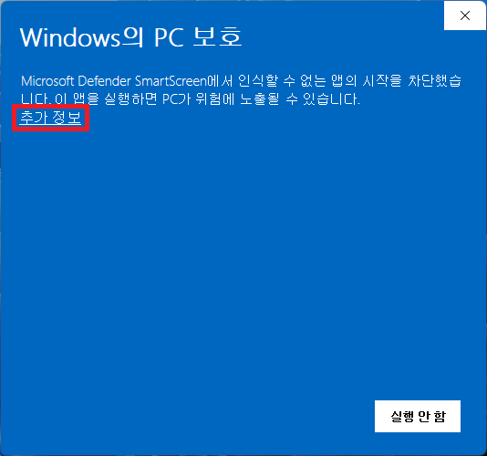
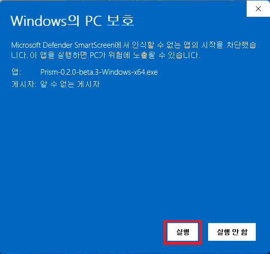
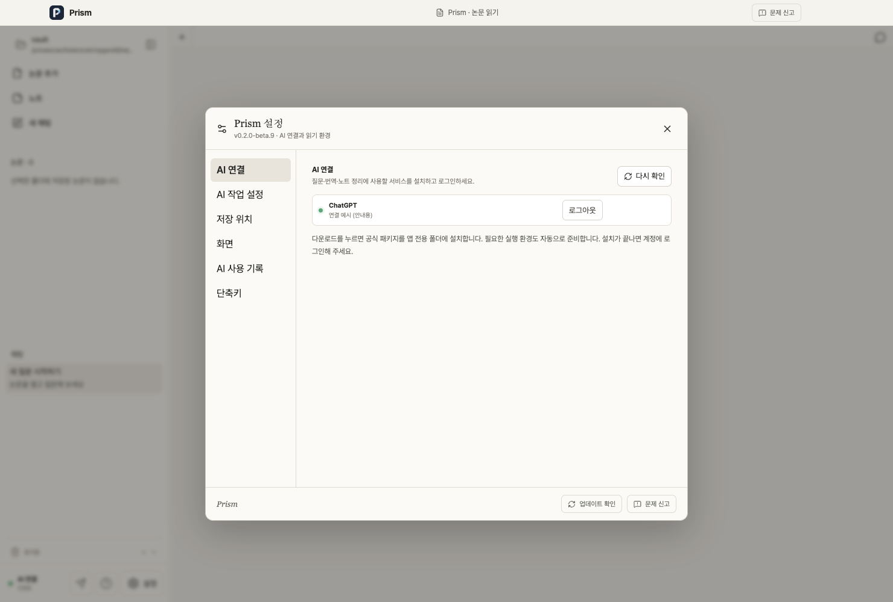
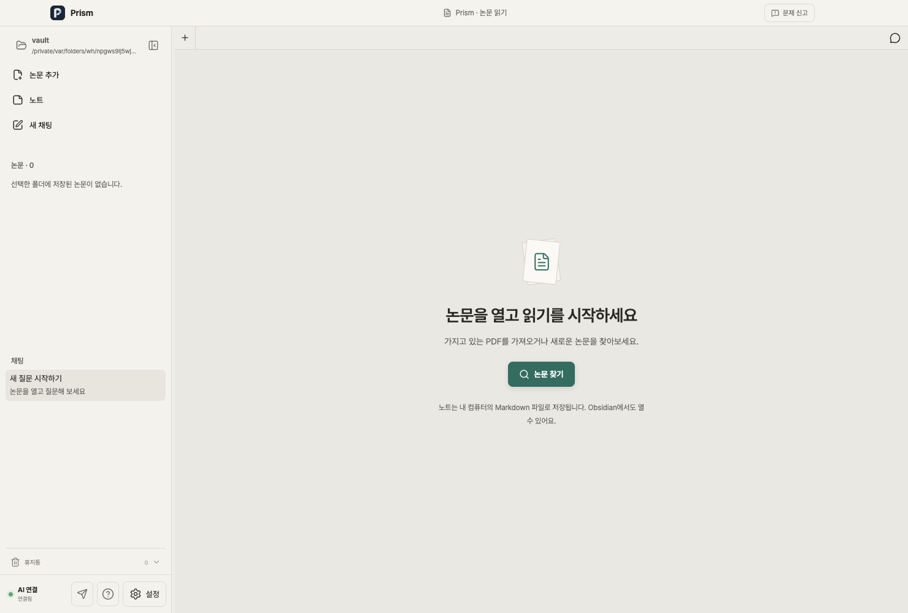
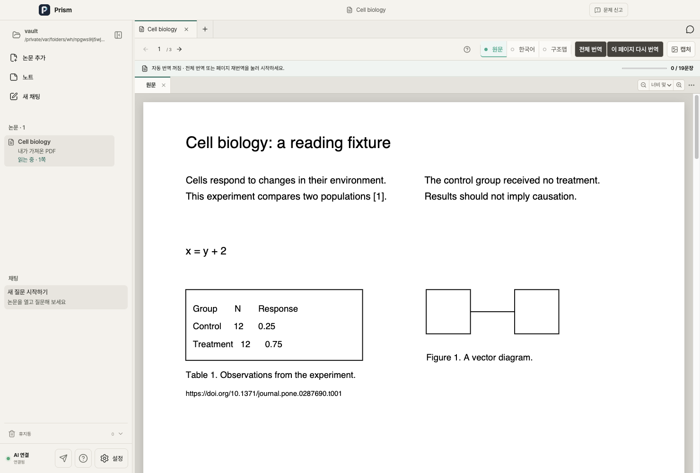
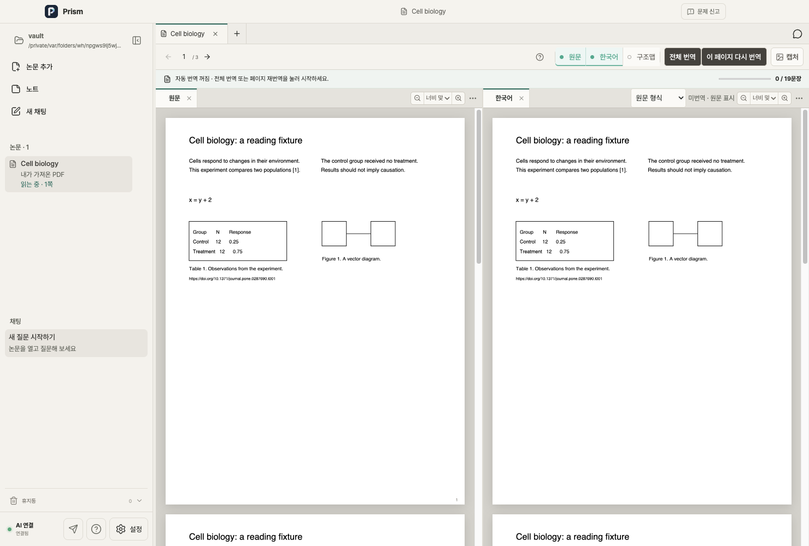
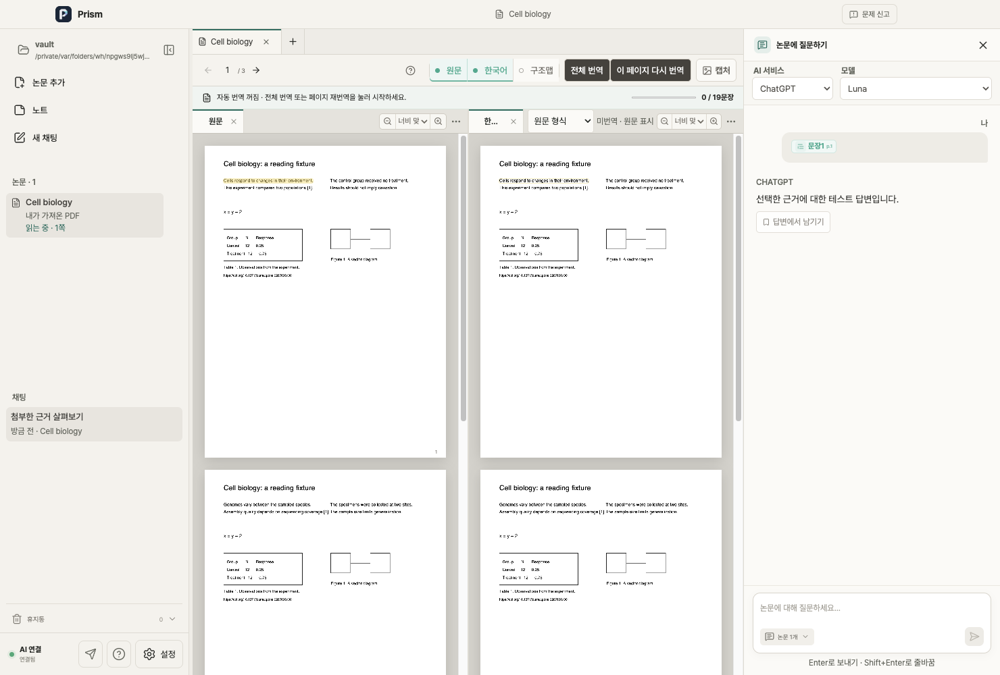
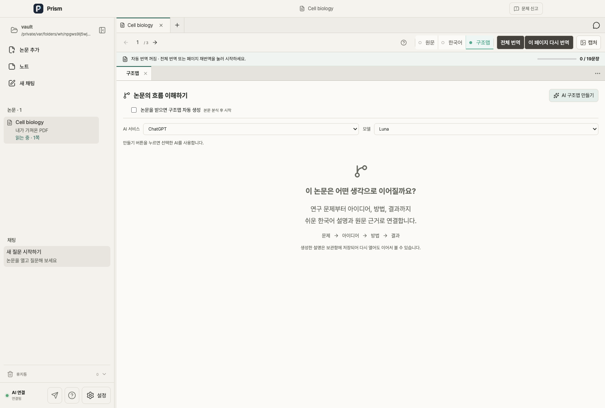
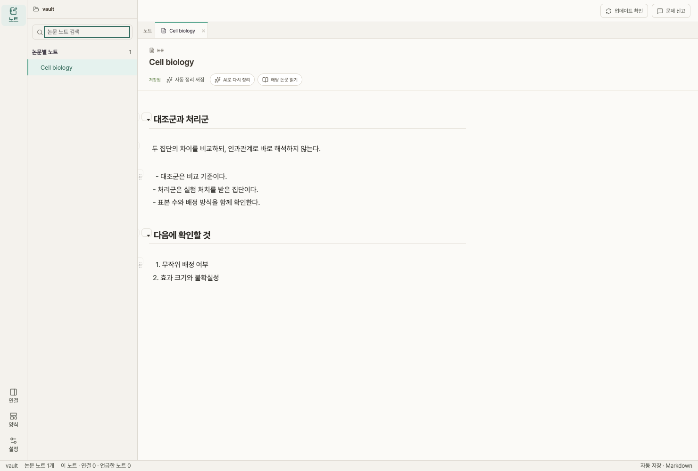

필요한 기능부터 찾아보세요
설치부터 번역·질문·노트까지, 필요한 기능을 실제 화면과 함께 살펴보세요.
처음 시작하기
저장 폴더를 정하고, 사용하는 AI를 연결하세요.
- 다운로드한 ZIP에는 설치 파일과 설치·실행 가이드 PDF가 함께 들어 있습니다. 압축을 풀고 가이드를 먼저 확인하세요.
- Windows는 설치 EXE를 실행합니다. 「Windows의 PC 보호」가 표시되면 추가 정보 → 실행을 선택합니다. Mac은 DMG를 열어 Prism을 응용 프로그램 폴더로 복사합니다.
- Mac에서 첫 실행이 차단되면 시스템 설정 → 개인정보 보호 및 보안 → 그래도 열기를 선택합니다. 현재 배포는 Windows 코드 서명과 Apple 공증을 제공하지 않습니다.
- 첫 실행에서 테마와 논문·노트를 저장할 폴더를 선택합니다. 폴더를 고른 뒤 다음을 누르세요.
- ChatGPT 또는 Claude를 연결합니다. 설치가 필요하면 앱의 다운로드 버튼을 누르고, 설치가 끝나면 로그인합니다.
- 이미 사용 중인 같은 컴퓨터에서는 Prism을 완전히 종료한 뒤 새 앱으로 교체하세요. 기존 보관함과 사용자 데이터 폴더는 삭제하지 않습니다.
일반적인 덮어 설치는 폴더 설정과 대화를 유지합니다. 다른 컴퓨터나 다른 OS 계정은 별도의 환경입니다.



논문 추가와 검색
가지고 있는 PDF를 넣거나, 제목·키워드로 논문을 찾으세요.
- 메인 화면에 PDF 한 개를 끌어놓거나 논문 추가에서 파일을 선택합니다. 원본 파일은 이동하지 않고 보관함으로 복사합니다.
- 논문 추가에서 모든 분야 또는 arXiv 검색을 선택하고 제목·키워드를 입력합니다.
- PDF를 받을 수 있는 결과는 저장하고, 접근이 제한되면 원문 페이지에서 이용 권한을 확인하세요. 가지고 있는 PDF에 서지정보를 붙일 수도 있습니다.
- 왼쪽 라이브러리에서 논문을 다시 엽니다. 같은 내용의 로컬 PDF는 중복 여부를 확인합니다.
출판사 접근 제한을 우회하지 않습니다. 이미지로만 된 스캔의 OCR과 암호화 PDF의 비밀번호 입력은 현재 지원하지 않습니다.

원문 읽기와 화면 배치
원문·한국어·구조맵을 필요한 만큼 열어 읽으세요.
- 논문을 열면 원문이 표시됩니다. 페이지 이동과 확대·축소를 이용해 읽습니다.
- 상단 원문 / 한국어 / 구조맵 버튼으로 각 화면을 켜거나 끕니다.
- 탭을 다른 탭 막대에 놓으면 합쳐지고, 화면 가장자리에 놓으면 나뉩니다. 끌기 중 Esc를 누르면 취소합니다.
- 경계선을 끌어 크기를 조절하고 두 번 클릭해 균등하게 나눕니다. 배치는 논문·보관함별로 저장됩니다.
문장·수식·그림을 선택해 질문이나 기록으로 연결할 수 있습니다. 인쇄된 PDF 원본 색상은 테마와 별도로 유지됩니다.

한국어 번역
원문과 번역을 나란히 읽고, 필요한 부분을 다시 확인하세요.
- 한국어 화면을 켜고 AI 번역 또는 전체 번역을 실행합니다. 연결된 AI 서비스가 필요합니다.
- 설정 → AI 작업 설정에서 번역에 사용할 서비스·모델과 자동 실행 여부를 선택합니다.
- 진행률과 처리 중인 페이지를 확인하세요. 저장된 번역이 있으면 누락된 부분을 이어서 번역할 수 있습니다.
- 핵심 전문 용어를 원어로 남기기를 끄면 한국어 용어 중심으로 번역합니다. 바뀐 설정은 다음 번역부터 적용됩니다.
AI 번역에는 오류가 있을 수 있습니다. 수식·표·그림은 원문을 함께 확인하고, 번역을 바꾸려면 재번역을 선택하세요.

근거를 붙여 AI에게 질문하기
문장·수식·그림을 질문에 붙여 정확한 위치를 함께 전달하세요.
- 읽는 문장·수식·그림을 클릭하고 질문에 추가를 누릅니다. 우클릭으로 바로 추가할 수도 있습니다.
- AI 대화를 열고 첨부된 근거 태그를 확인한 다음 궁금한 내용을 적어 보냅니다.
- 태그만 붙인 상태에서 보내기를 누르면 선택한 내용을 설명하도록 요청합니다.
- 감지되지 않은 그림은 피겨 캡처로 영역을 지정합니다. 이전 대화는 왼쪽 대화 목록에서 다시 엽니다.
AI 답변은 논문의 결론을 대신하지 않습니다. 근거 위치를 확인하세요. 대화가 남아 있어도 인증 만료 시 다시 로그인해야 할 수 있습니다.

논문의 구조맵
연구 문제부터 방법·결과·한계까지 연결해 살펴보세요.
- 상단 구조맵을 열고 AI 구조맵 만들기를 선택합니다.
- 생성 전에 사용할 모델을 확인합니다. 긴 논문은 전체에서 고른 발췌를 바탕으로 분석합니다.
- 개념을 선택하면 연결 이유와 원문 발췌를 확인하고 해당 PDF 위치로 이동할 수 있습니다.
- 구조맵을 닫으면 이전 문서 배치로 돌아갑니다. 다시 만들기에 실패해도 이전 결과는 보존됩니다.
구조맵은 AI가 생성한 해석입니다. 연구의 주장·한계는 원문과 대조하세요. 원하면 AI 작업 설정에서 자동 생성을 켤 수 있습니다.

내 기록과 논문 노트
논문과 대화의 핵심을 주제별로 읽고, 내 생각을 같은 노트에 덧붙이세요.
- 논문 노트를 열면 정리된 내용과 직접 남긴 메모를 하나의 문서에서 읽고 편집할 수 있습니다. 제목과 짧은 목록으로 핵심을 확인하세요.
- AI 작업 설정에서 채팅의 노트 자동 정리를 켜면, 완료된 질문과 답변이 짧은 주제별 요약으로 반영됩니다. 다른 주제를 이야기하다 돌아와도 같은 주제로 판단되면 기존 위치에서 다시 정리합니다.
- 직접 수정하거나 삭제한 주제는 자동 정리가 덮어쓰지 않습니다. 과거 대화 전체를 소급해서 정리하지는 않습니다.
- 채팅 답변의 남기기에서 내 메모를 적어 노트에 저장할 수 있습니다. 함께 저장된 원래 답변은 제목 옆 화살표로 펼쳐 확인합니다.
- 노트는 자동 저장됩니다. 논문 정리를 새로 만들려면 AI로 다시 정리를 선택합니다. 같은 보관함은 Obsidian에서도 열 수 있습니다.
직접 쓴 노트는 AI 자동 정리 설정과 관계없이 저장됩니다. 보관함을 바꾸면 다른 보관함의 내용이 보이므로 현재 폴더를 확인하세요.

AI 연결·저장 위치·화면 설정
모델과 작업량을 조절하고, 저장 위치를 확인하세요.
- 설정 → AI 연결에서 ChatGPT·Claude의 설치와 로그인 상태를 확인합니다. 연결이 만료되면 다시 로그인합니다.
- AI 작업 설정에서 번역·구조맵·노트 정리에 사용할 모델과 자동 실행 여부를 고릅니다.
- 저장 위치 → 디렉토리 설정에서 보관함을 선택합니다. 기존 논문이 안 보이면 이전 보관함을 선택했는지 먼저 확인하세요.
- 화면에서 라이트·다크·시스템 테마를 선택하고 기능 안내 다시 보기로 사용 안내를 재시작합니다.
- 문제 신고에서 오류 상황을 적고 필요할 때 이미지와 논문 위치를 첨부합니다.
AI 서비스 이용 가능 여부와 사용 한도는 각 계정에 따릅니다. Prism 설치와 AI 계정 로그인은 별도입니다.
새 버전 설치·재설치와 데이터 보존
같은 컴퓨터에서는 앱만 교체하고, 보관함과 사용자 데이터는 남기세요.
- 진행 중인 작업을 저장하고 Prism을 완전히 종료합니다.
- Windows는 새 설치 EXE를 실행합니다. Mac은 새 DMG의 Prism을 기존 응용 프로그램 위치에 복사해 교체합니다.
- 앱을 다시 열어 기존 폴더와 대화 목록을 확인합니다. 버전 정보에서 설치한 버전을 확인하세요.
- 백업할 때는 논문·노트 보관함과 사용자 데이터 폴더를 함께 보관합니다. 별도 PDF 폴더를 사용했다면 그 폴더도 필요합니다.
- Mac 사용자 데이터: ~/Library/Application Support/prism. Windows 사용자 데이터: %APPDATA%\prism. 설정은 settings.json, Prism 대화는 sessions.json에 저장됩니다.
앱 정리 프로그램으로 사용자 데이터를 지우거나 새 컴퓨터로 옮기면 자동 복원이 보장되지 않습니다. 인증 정보가 포함될 수 있는 백업은 개인적으로 안전하게 보관하세요.
일치하는 기능이 없습니다. 다른 단어로 검색해 보세요.